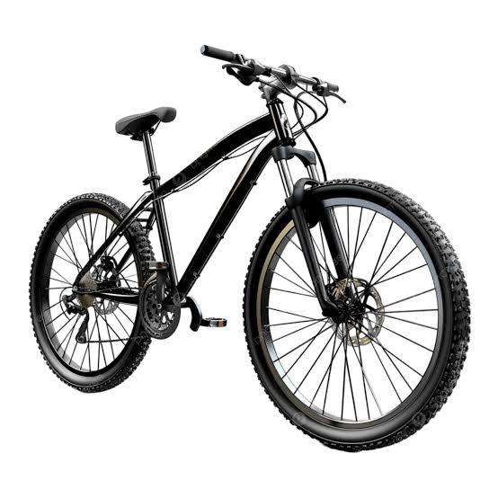
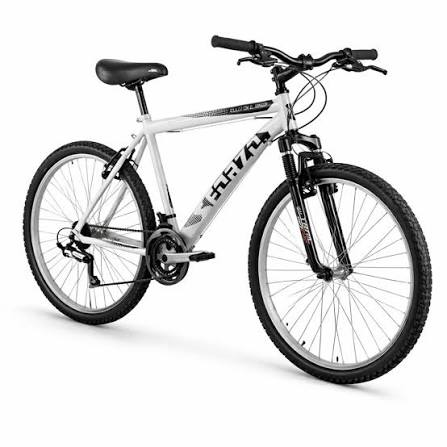
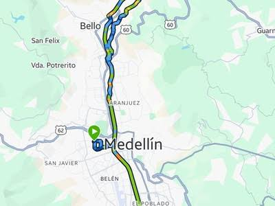
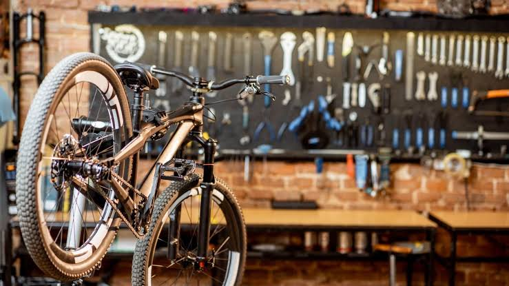

¿Quiénes somos?
Rueda Libre - Pedalea Medellín a tu ritmo. Somos un emprendimiento paisa apasionado por la movilidad sostenible y el turismo sobre dos ruedas. Desde 2021 ayudamos a locales y visitantes a descubrir la ciudad desde una perspectiva diferente, limpia y divertida. Ya sea que necesites moverte un día por la ciudad o quieras hacer un recorrido guiado por nuestros lugares icónicos, tenemos la bicicleta perfecta para ti. Encuéntranos
Nuestros servicios
- Alquiler de bicicletas:
Contamos con bicicletas urbanas, de montaña y electricas por horas, dias o semanas. Incluyen casco y candado de segurdad


-
Recorridos guiados:
Rutas turisticas y culturales por los lugares mas representativos de Medellin (Parque del Rio, Comuna 13, Centro historico) acompañado por guias locales

-
Taller basico:
Ajustes rapidos, inflado de llantas y reparacion de pinchazos para que nunca te queides varado en la ruta.

¿Cómo alquilar?
Pasos para alquilar tu bicicleta:
- Elige tu bicicleta: Revisa nuestro catálogo y selecciona la que mejor se adapte a tu recorrido.
- Reserva en línea o visítanos: Separa tu bici desde la web o acércate a nuestro local en El Poblado.
- Presenta tu documento: Acércate con tu identificación oficial para validar la reserva.
- Disfruta la ciudad: Recoge tu bici con tu documento de identidad y ¡empieza a pedalear!
Beneficios:
- Flexibilidad total: Alquila por horas o dias segun tus planes.
- Equipamiento completo: Cada alquiler incluye casco, candado de alta seguridad y mapa de ciclorrutas de la ciudad.
- Precios accesibles: Tarifas justas sin costos ocultos.
- Apoyo a la movilidad sostenible: Contribuyes a reducir la huella de carbono en la ciudad.